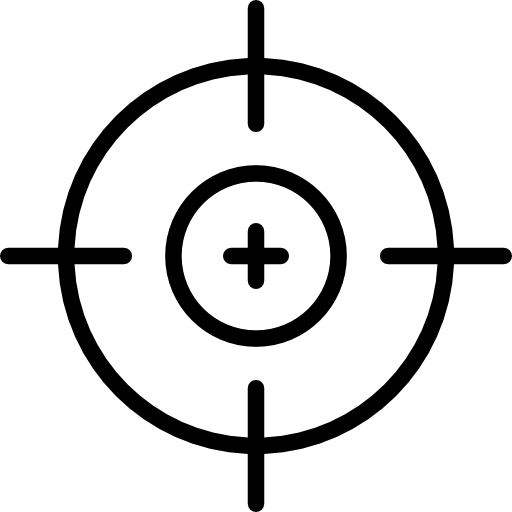

<ion-header>
  <ion-toolbar color="primary">
    <ion-img slot="start" [src]="'../../assets/icon/unisinos_branco.png'"></ion-img>
    <ion-title>
      Mapa
    </ion-title>
    <ion-button slot="end" (click)="atualizarLocalizacao()">
      <ion-icon name="send"></ion-icon>
    </ion-button>
  </ion-toolbar></ion-header>

<ion-content padding>
  <div class="map-wrapper">
    <div id="map_center">
      <br>
      <span>{{latitude | number:'1.3-3'}},{{longitude | number:'1.3-3'}}</span>
    </div>
    <div #map id="map"></div>
  </div>
  <!-- <div #map id="map" width="1000" height="1000"></div> -->
</ion-content>
